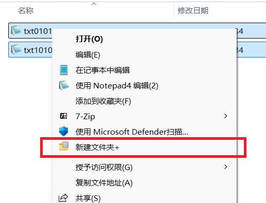
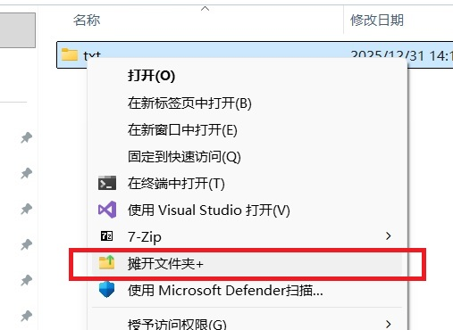

Windows Explorer shell extensionWindows 资源管理器 Shell 扩展
Tidy folders in two clicks.两次点击，整理文件夹。
New Folder + and Break Folders + add the two missing verbs to the Windows right-click menu: group what you selected into one folder, or flatten a folder tree in place — and undo it all with Ctrl+Z.
Free for personal use · Windows 10 / 11 · x86 & x64个人使用免费 · Windows 10 / 11 · x86 与 x64
Windows 10 / 11
x86 & x64
No admin rights无需管理员权限
No .NET, no MFC不依赖 .NET / MFC

New Folder + — the selected files are grouped into a new folder named after their common prefix.新建文件夹+ — 选中的文件会归入按公共前缀命名的新文件夹。

Break Folders + — every file below the folder moves up one level.摊开文件夹+ — 文件夹下所有文件都上移到上一级。
Screenshots use the Chinese UI; menu labels follow your Windows display language.截图为中文界面；菜单文字会跟随 Windows 显示语言。
Features功能
Two commands, no clutter两个命令，恰到好处
Everything happens in place and uses Explorer's own file operations, so files never take a detour.
所有操作都就地完成，并使用资源管理器自身的文件操作，文件不会绕道。
New Folder +新建文件夹+
Select any mix of files and folders and choose New Folder +. It creates a folder next to the first item, names it from the longest common prefix of the selected names (extensions stripped), and moves everything inside.
Flatten a folder tree in place: every file at every depth moves to the parent folder. The empty folders stay behind for you to delete once you are happy with the result.
Right-click any file or folder. If nothing changed, restart Windows Explorer (Task Manager > Windows Explorer > Restart).
对任意文件或文件夹点击右键。如果没有任何变化，请重启 Windows 资源管理器（任务管理器 > Windows 资源管理器 > 重新启动）。
On Windows 11 the commands are classic menu entries. Click Show more options (or press Shift+F10) to reach them. The first launch may also trigger SmartScreen because the builds are not code-signed.
Windows 11 上这两个命令属于传统菜单项，请点击「显示更多选项」（或按 Shift+F10）。首次运行还可能触发 SmartScreen 提示，因为发布版本未做代码签名。
FAQ常见问题
Good to know你需要知道的
Short answers to the questions that come up most.
最常见的几个问题，简短回答。
The commands don't appear in the menu.右键菜单里没有这两个命令。
Restart Windows Explorer (Task Manager > Windows Explorer > Restart). On Windows 11, look under Show more options (Shift+F10). If they still do not show, open the manager from the Start Menu — it registers the extension automatically.
重启 Windows 资源管理器（任务管理器 > Windows 资源管理器 > 重新启动）。Windows 11 上请到「显示更多选项」（Shift+F10）中查找。如果仍然没有，请从开始菜单打开管理器，它会自动注册扩展。
Break Folders + left empty folders behind.摊开文件夹+ 之后留下了空文件夹。
That is by design: only files are moved, so nothing is deleted unexpectedly. Review the result and delete the empty folder tree yourself.
这是有意为之：命令只移动文件，不会意外删除任何内容。确认结果后自行删除空的文件夹结构即可。
New Folder + is missing when I select one folder.只选中一个文件夹时看不到新建文件夹+。
By design — with a single folder there is nothing to group. Select files, or several folders, and the command appears.
这是有意设计——只有一个文件夹时没有可归组的内容。选中文件或多个文件夹时命令就会出现。
Does it work with network paths or virtual folders?支持网络路径或虚拟文件夹吗？
Local paths and UNC paths work. Virtual folders, archives, and cloud placeholders that are not real filesystem paths are not supported, and paths longer than 260 characters (MAX_PATH) are not handled.
Why does Windows warn about the installer?为什么 Windows 会警告安装程序？
The builds are not code-signed, so SmartScreen may warn on first run. Download only from the official Releases page, and choose More info > Run anyway if you trust the source.